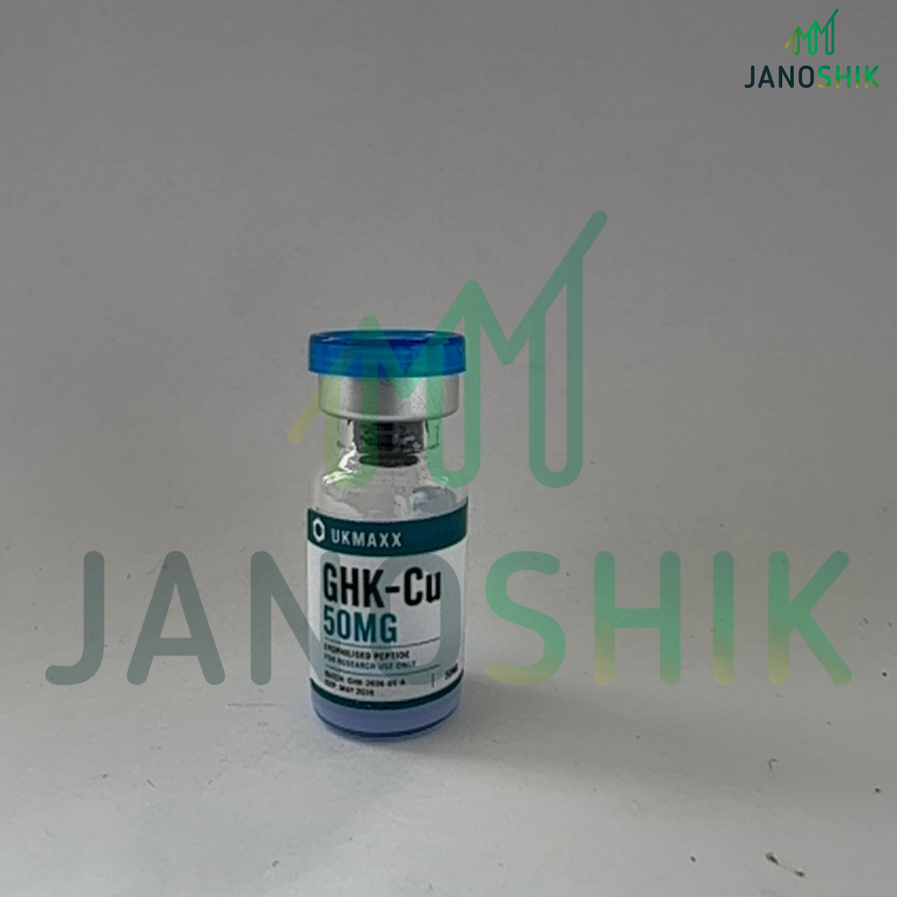
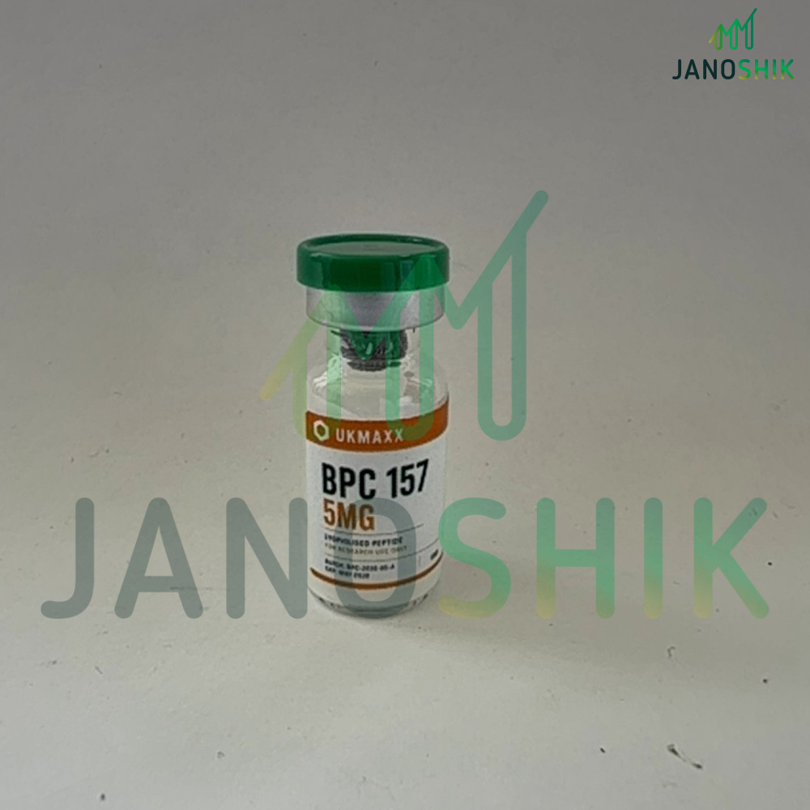
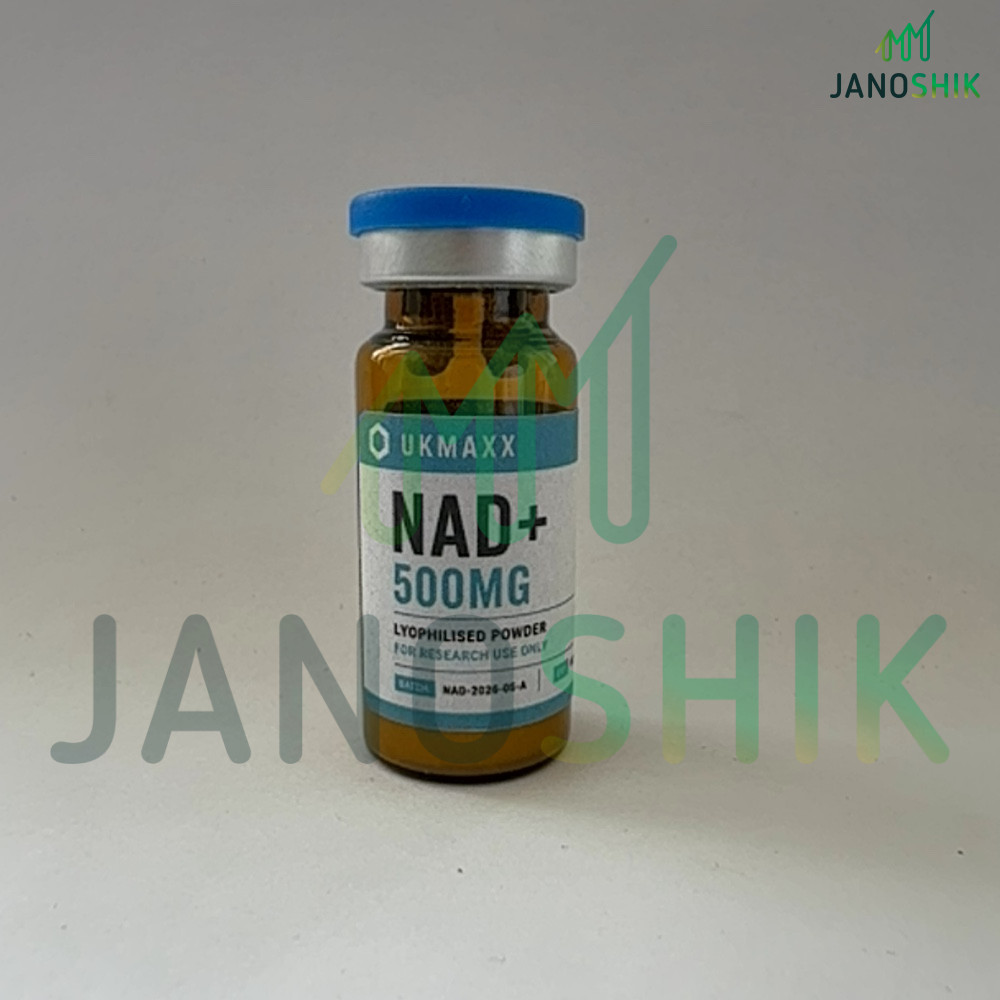

CurrentGHK-Cu 50mgGHK-2026-05-A · report #208700
You must be 18 or older to access this site. All products are supplied strictly for laboratory and in-vitro research use only. Not for human consumption.
By entering you confirm you are a qualified researcher aged 18 or older acting in compliance with all applicable laws.
UKMAXX connects released research products to a named batch, the submitted laboratory sample and the original report. Check the evidence before deciding whether to order.





These cards summarise the currently released independently tested peptide and coenzyme listings. The laboratory page—not the UKMAXX summary—is the source record.
Janoshik report #225850 · HPLC method · tested 27 August 2026.
Janoshik report #208699 · HPLC method · tested 27 July 2026.
Janoshik report #208700 · HPLC method · tested 28 July 2026.
Janoshik report #208698 · NAD+ analysis · tested 29 July 2026.
Certificate previews are provided for orientation. Use the laboratory-source button on each card to authenticate the original record directly.
A laboratory report records the identity, measured content or purity data generated from the sample received by that laboratory. The report number and source link allow the document to be authenticated.
UKMAXX publishes the batch code, original report and remaining or historical batch record. This connects the tested sample to a defined stock batch without claiming that every physical vial was individually tested.
Available stock is connected to its current batch record and source report.
Browse active records →The record remains available after stock reaches zero, preserving verification for earlier orders.
View archived RT10 →A failed release decision is kept separate from current stock and remains publicly visible.
View rejected record →Ipamorelin batch IPA-2026-05-A carried a 5mg label claim. The submitted sample returned a measured content result of 3.71mg. UKMAXX rejected the batch and did not release it for sale.
The 99.429% purity figure did not override the content shortfall. Purity and measured content answer different questions, which is why the complete result matters.
A current product should lead somewhere more useful than a vendor-hosted image. RT20 connects the listing to its batch code, the submitted sample, the result summary and Janoshik report #225850.
Short answers about samples, batches and public verification.
Yes. The public COA checker provides active, archived and rejected records with direct laboratory links.
No. The report documents the submitted sample. UKMAXX publishes the associated batch code and batch boundary so that evidence is not presented without context.
The current independently tested peptide and coenzyme listings are shown above. BAC Water is a support product covered by UKMAXX internal QC and is not represented as one of these third-party records.
Customers may need to verify a vial after the batch has sold through. Archiving preserves that evidence rather than removing it when the commercial listing changes.
Yes. The rejected Ipamorelin batch remains visible and was not released for sale.